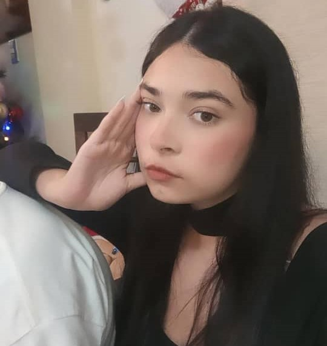

Fran: Entre Sombras y Redención
En el tumultuoso escenario de la vida de Fran, las sombras de la traición y el arrepentimiento danzaban en su corazón. Una vez, estuvo unida en sagrado vínculo con Ale, compartiendo risas y lágrimas, sueños y realidades. Sin embargo, la tentación la llevó a los brazos de Meli, dejando un rastro de dolor y desconfianza en su estela.
El divorcio fue un campo de batalla donde se desgarraron emociones y se dividieron vidas. Dos hijos, Vale y Gabriel, quedaron en la encrucijada de dos mundos rotos. En medio de la tormenta, Jorge, el perro fiel, miraba con ojos tristes, incapaz de comprender la fragilidad humana que destrozaba su hogar. Fran, en su agonía, se enfrentaba al espejo de sus decisiones, deseando volver el tiempo atrás, anhelando una redención que parecía esquiva en la penumbra de su propia destrucción.